Documentation rots the moment you write it. OpenWiki — an open-source CLI from the LangChain team — attacks the problem with an agent: point it at a repository and it writes the wiki; point it at your Gmail and it distills your inbox into a personal knowledge base you can chat with. I ran both for real. Here's the whole thing — the architecture, the guardrails, and the demos, screenshots included.
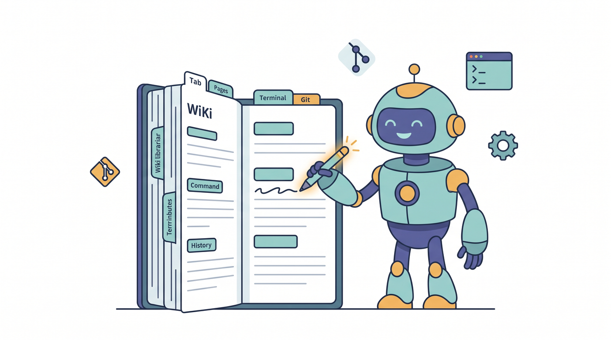
OpenWiki is a documentation agent in a CLI. In code mode, one command
(openwiki --update) collects git evidence, explores your repo through a docs-only sandboxed
backend, and writes a structured wiki into openwiki/ — then wires up a scheduled CI workflow so
the docs keep refreshing themselves. In personal mode, connectors (Gmail, Notion, Slack, X, web
search) feed the same agent, which distills your day into commitments, logistics and themes under
~/.openwiki/wiki.
I tested both against reality: 100 real emails became a second brain I could query from the terminal, and this very website got a four-page wiki from a single command. The design details — write guards that make the agent physically unable to touch source code, and a SHA-256 snapshot gate that keeps scheduled runs from looping — are the parts worth stealing.
Every team knows the cycle. The code changes daily; the wiki doesn't. Onboarding takes weeks because the only accurate documentation is the code itself, and nobody ever volunteers to update the wiki. What's new is who suffers: it's no longer just humans. AI coding agents — Claude Code, Copilot, Cursor — are only as good as the context they can find, and a stale wiki misleads them exactly as it misleads a new hire.
The obvious fix is also the honest one: if writing documentation is the chore nobody wants, give the chore to an agent — but wrap it in guardrails so it can't do anything except documentation.
OpenWiki is an MIT-licensed CLI from the LangChain team,
built on their DeepAgents framework. Install is one line —
npm install -g openwiki — and the terminal UI is, delightfully, React: it's built with
Ink, so the interactive chat, streaming tool calls and setup
wizard all render in your console.
The same agent serves two very different masters:
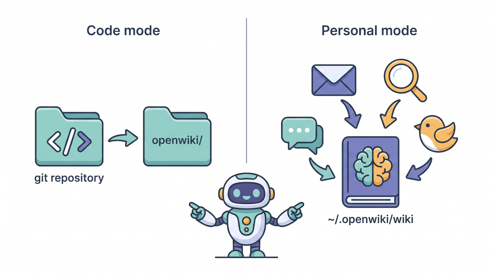
openwiki/; personal mode builds a private knowledge brain in ~/.openwiki/wikiopenwiki --update) — documents the current repository: quickstart, architecture, workflows, source maps. Recurrence comes from a scheduled GitHub Actions workflow it writes for you.openwiki personal) — ingests configured connectors (Gmail, Notion, Slack, X, web search, Hacker News) and synthesizes a local wiki of commitments, logistics, themes and open questions.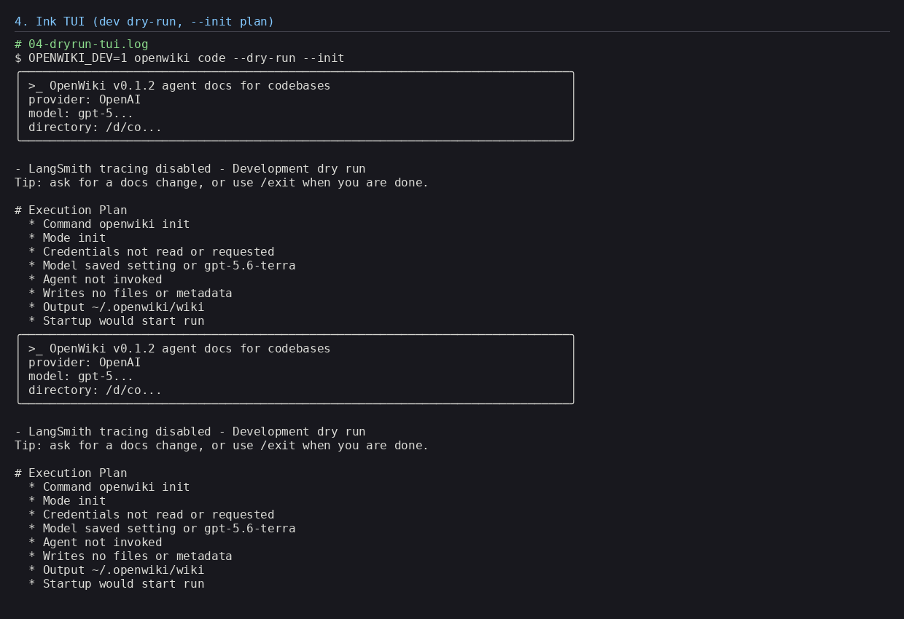
The architecture is small — a CLI, a credential store in ~/.openwiki/.env, a provider-agnostic model
layer (OpenAI with an API key or your ChatGPT subscription, Anthropic, OpenRouter, Fireworks, Baseten,
NVIDIA NIM, or any OpenAI-compatible gateway), and a SQLite checkpointer so conversations survive restarts. But
two decisions elevate it from "neat demo" to "thing you can trust".
OpenWiki extends DeepAgents' shell backend with explicit write guards: the agent may only write documentation files. It sees the repo through virtual paths, its output is capped, its commands are time-boxed. You don't have to trust the model's intentions — the backend enforces the contract.
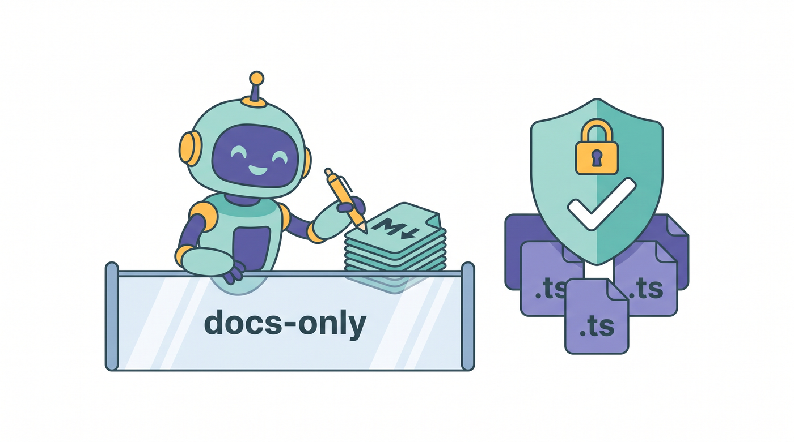
After every run, OpenWiki computes a SHA-256 snapshot of the whole wiki directory and writes its update metadata only if the content actually changed. A no-op update stays a true no-op — which is what stops a scheduled weekly run from committing metadata churn forever. It's a small idea that every "agent on a cron job" system should copy.
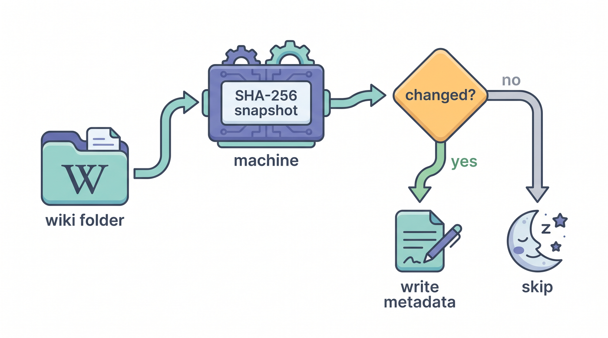
Theory is cheap, so I connected my actual Gmail. Authorization is a single command — openwiki auth
gmail — which opens a Google consent screen with a read-only scope: the agent can read
mail, never send or delete it. Tokens land in ~/.openwiki/.env, and only the variable names
are ever printed, never the secrets.
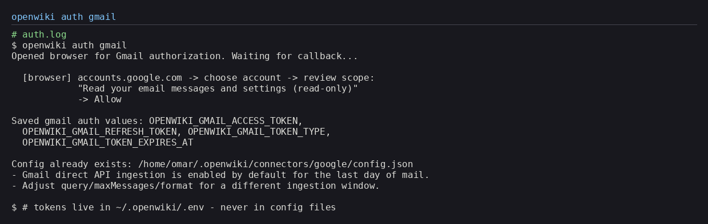
openwiki auth gmail: browser consent in, read-only tokens out — printed by name onlyIngestion is a two-stage rocket, and the separation matters:
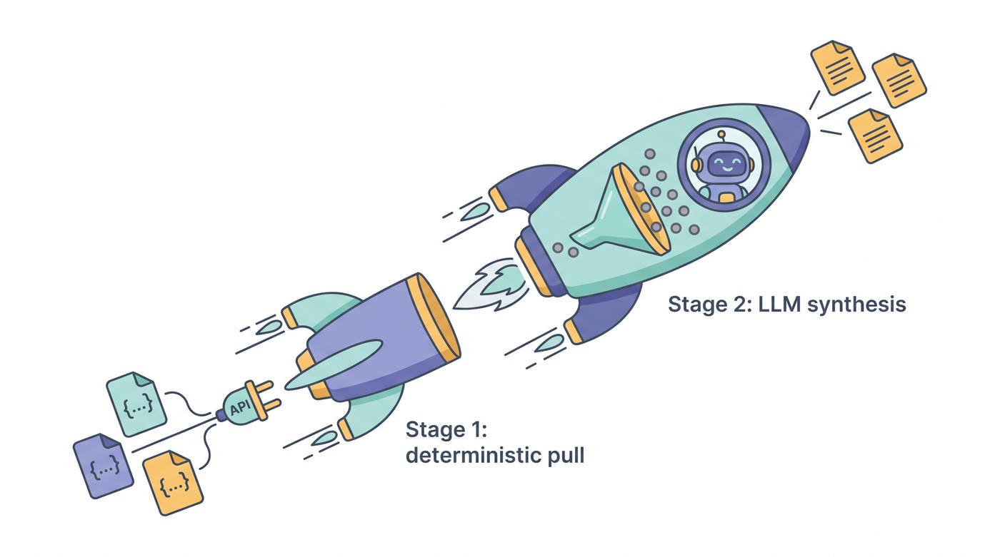
The pull fetched 100 messages from the last 24 hours into raw JSON. Then the agent — treating raw email as untrusted evidence, not instructions — classified every message by type, priority and durability, and wrote six cross-linked pages: commitments, personal logistics, themes, open questions, a source evidence table, and a quickstart. Receipts, promotions and newsletters didn't make the cut. That's the point.
And then the fun part — you can just ask it things:
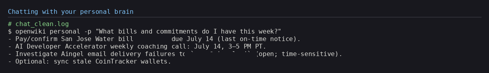
Because the wiki is plain markdown, a tiny docsify server also turns it into a local website — sidebar, full-text search, and evidence-linked tables:
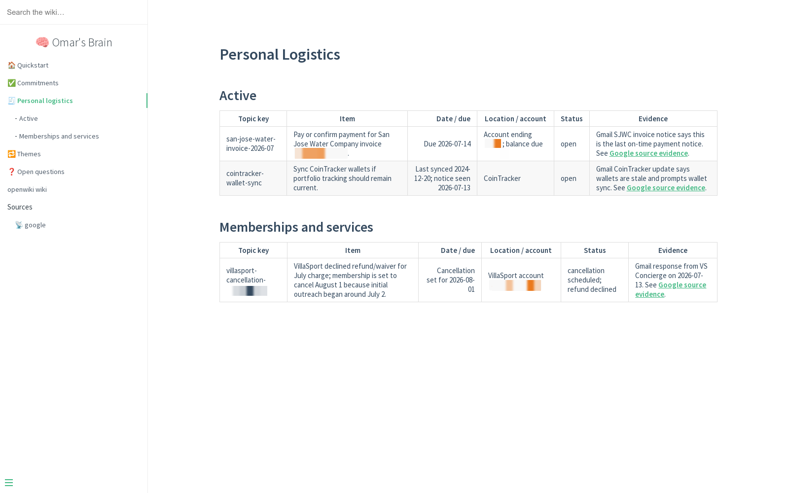
localhost:3054: dates, statuses, and evidence links per row. (Account details blurred)
For the finale I pointed OpenWiki at the repository you're reading right now — omkamal.github.io,
420 files of articles and cheatsheets with zero documentation — and ran code mode:
$ cd ~/omkamal.github.io
$ openwiki --update --print
Created the initial generated wiki entrypoint at openwiki/quickstart.md
$ git status --short
M CLAUDE.md # OPENWIKI block appended
?? .github/ # scheduled openwiki-update.yml workflow
?? AGENTS.md # agent guidance, created
?? openwiki/ # the generated wiki
One command produced the wiki and the recurrence machinery: an AGENTS.md, a
CLAUDE.md block that tells coding agents to read the wiki first, and a scheduled GitHub Actions
workflow that will keep refreshing it. A follow-up prompt expanded the wiki to four cross-linked pages —
quickstart, site architecture, publishing workflow, and a source map:
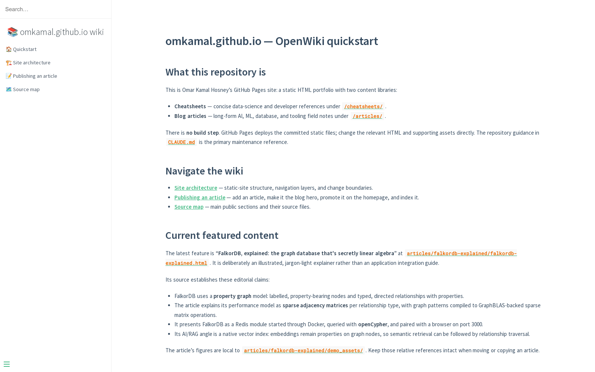
The complete 13-minute video covers everything in motion — the animated pipeline, the install from a fresh clone, the live Gmail demos, and the repo run — with every diagram synced to the narration:
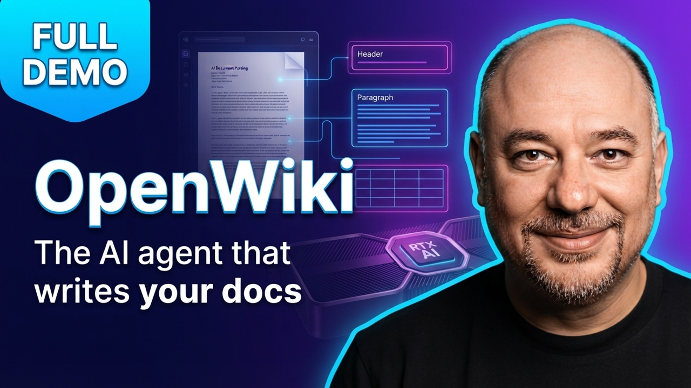
Four takeaways survived contact with reality:
openai-chatgpt provider avoids per-token billing); connector auth setup has a few sharp edges; and as
with any young project, expect the occasional rough patch — I hit a test-isolation bug and sent the fix upstream
(PR #334).
npm install -g openwikiIllustrations generated with Google's Nano Banana image model; diagrams use Font Awesome Free icons (CC BY 4.0, Fonticons, Inc.). Personal details in demo screenshots are blurred.
Field note
The classification policy is the underrated feature. Every item gets a priority and a durability (ephemeral / durable / recurring), and only high-signal durable items reach the canonical pages. My inbox's thirty-plus newsletters and receipts were read, weighed, and correctly ignored. A second brain that hoards everything is just a second inbox.